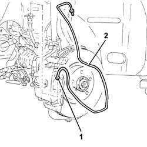
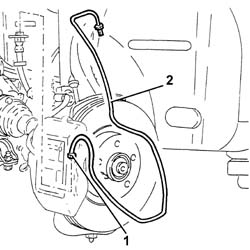
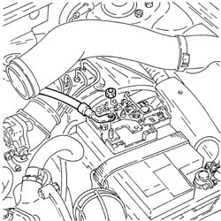
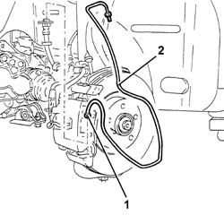

3340B55 central brake pipe to lh - r r
- Path
- Procedures > 33 BRAKING SYSTEM > 3340 A(B.S. ANTI-LOCK BRAKING SYSTEM .) > 3340B abs system pipes > 3340B55 central brake pipe to lh - r r
- Kind
- repair procedure (removal / refitting; the operation number is the code)
- Applies to
- all engines; all production periods
- Interactive page
- https://sloeber94.github.io/elrnDB-a147/en/#/3025259
Applies to: engines: 1.6 TS, 2.0 TS; all production periods
 Removing
Removing
 Refitting
RefittingPosition the vehicle on the ramp.
Proceed with removal 5530B10 battery - r+r .
Proceed with removal 5530B52 Battery DRIP TRAY/SUPPORT - R.R. .
Proceed with removal 3340A12 A'B.S. system. - electronic and hydraulic CONTROL UNIT R.R. .
Proceed with removal 3340A13 abs central mount - r r .
Proceed with removal 4450B10 Front WHEEL (one) - R.R. (Left side).
Proceed with removal 7055B64 Engine compartment DUST shield in front wheel arch (one), left or right - R.R. (Left side).
1. Undo the connector for the rigid pipe from the hydraulic control unit to the left front brake, flexible pipe side.
2. Working from the wheelarch, remove the rigid pipe from the hydraulic unit to the front left brake after releasing it from the attachments.

Applies to: engines: 1.6 TS, 2.0 TS; all production periods
Refitting
RemovingPlace in its seating the rigid pipe from the hydraulic unit to the front left brake and secure it with its attachments.
Tighten the connector on the rigid pipe from the hydraulic unit to the front left brake, flexible pipe side, to the recommended torque.
 | Fastening | Component | Ø | Value (daNm) |
|---|---|---|---|---|
- | Connector | PIPE FROM CONTROL UNIT TO FRONT BRAKES | M10 | (Flexible pipe side) 1.3 ÷ 1.5 |
Proceed with the refitting 7055B64 Engine compartment DUST shield in front wheel arch (one), left or right - R.R. (Left side).
Proceed with the refitting 4450B10 Front WHEEL (one) - R.R. (Left side).
Proceed with refitting 3340A13 abs central mount - r r .
Proceed with refitting 3340A12 A'B.S. system. - electronic and hydraulic CONTROL UNIT R.R. .
Proceed with refitting 5530B52 Battery DRIP TRAY/SUPPORT - R.R. .
Proceed with refitting 5530B10 battery - r+r .
Bleed the air from the hydraulic braking system 3330A14 HYDRAULIC BRAKING SYSTEM - Bleed air .
Remove the car from the ramps.
Applies to: engines: 3.2 V6; all production periods
Removing
RefittingPosition the vehicle on the ramp.
Proceed with removal 5530B10 battery - r+r .
Proceed with removal 5530B52 Battery DRIP TRAY/SUPPORT - R.R. .
Proceed with removal 4450B02 left front wheel r r .
Proceed with removal 3340A12 A'B.S. system. - electronic and hydraulic CONTROL UNIT R.R. .
Proceed with removal 3340A13 abs central mount - r r .
Proceed with removal 7055B65 Engine compartment DUST PROTECTION in left front wheel arch - R.R. .
1. Undo the connector for the rigid pipe from the hydraulic control unit to the left front brake, flexible pipe side.
2. Working from the wheelarch, remove the rigid pipe from the hydraulic unit to the front left brake after releasing it from the attachments.

Applies to: engines: 3.2 V6; all production periods
Refitting
RemovingPlace in its seating the rigid pipe from the hydraulic unit to the front left brake and secure it with its attachments.
Tighten the connector on the rigid pipe from the hydraulic unit to the front left brake, flexible pipe side, to the recommended torque.
| Fastening | Component | Ø | Value (daNm) |
|---|---|---|---|---|
- | Connector | PIPE FROM CONTROL UNIT TO FRONT BRAKES | M10 | (Flexible pipe side) 1.4 ÷ 1.8 |
Proceed with refitting 7055B65 Engine compartment DUST PROTECTION in left front wheel arch - R.R. .
Proceed with refitting 3340A13 abs central mount - r r .
Proceed with refitting 3340A12 A'B.S. system. - electronic and hydraulic CONTROL UNIT R.R. .
Proceed with refitting 5530B52 Battery DRIP TRAY/SUPPORT - R.R. .
Proceed with refitting 5530B10 battery - r+r .
Top up the brake/clutch fluid level 0010T64 brake and or clutch fluid check level and top up as necessary .
Bleed the air from the hydraulic braking system 0010T65 hydraulic brake system bleed air .
Proceed with refitting 4450B02 left front wheel r r .
Remove the car from the ramps.
Applies to: engines: 1.9 JTD 8V, 1.9 JTD 16V; all production periods
Removing
RefittingPosition the vehicle on the ramp.
Proceed with removal 5530B10 battery - r+r .

Applies to: engines: 1.9 JTD 8V, 1.9 JTD 16V; all production periods
Proceed with removal 4450B02 left front wheel r r .
Proceed with removal 3340A12 A'B.S. system. - electronic and hydraulic CONTROL UNIT R.R. .
Proceed with removal 3340A13 abs central mount - r r .
Proceed with removal 7055B90 Left front WHEEL ARCH LINER - R.R. .
1. Undo the connector for the rigid pipe from the hydraulic control unit to the left front brake, flexible pipe side.
2. Working from the wheelarch, remove the rigid pipe from the hydraulic unit to the front left brake after releasing it from the attachments.

Applies to: engines: 1.9 JTD 8V, 1.9 JTD 16V; all production periods
Refitting
RemovingPlace in its seating the rigid pipe from the hydraulic unit to the front left brake and secure it with its attachments.
Tighten the connector on the rigid pipe from the hydraulic unit to the front left brake, flexible pipe side, to the recommended torque.
| Fastening | Component | Ø | Value (daNm) |
|---|---|---|---|---|
- | Connector | PIPE FROM CONTROL UNIT TO FRONT BRAKES | M10 | (Flexible pipe side) 1.3 ÷ 1.5 |
Proceed with refitting 7055B90 Left front WHEEL ARCH LINER - R.R. .
Proceed with refitting 3340A13 abs central mount - r r .
Proceed with refitting 3340A12 A'B.S. system. - electronic and hydraulic CONTROL UNIT R.R. .
Proceed with refitting 5530B10 battery - r+r .
Bleed the air from the hydraulic braking system 0010T65 hydraulic brake system bleed air .
Proceed with refitting 4450B02 left front wheel r r .
Remove the car from the ramps.
Topics linked from this page (12)
- 0010T64 brake and or clutch fluid check level and top up as necessary
- 0010T65 hydraulic brake system bleed air
- 3330A14 HYDRAULIC BRAKING SYSTEM - Bleed air
- 3340A12 A'B.S. system. - electronic and hydraulic CONTROL UNIT R.R.
- 3340A13 abs central mount - r r
- 4450B02 left front wheel r r
- 4450B10 Front WHEEL (one) - R.R.
- 5530B10 battery - r+r
- 5530B52 Battery DRIP TRAY/SUPPORT - R.R.
- 7055B64 Engine compartment DUST shield in front wheel arch (one), left or right - R.R.
- 7055B65 Engine compartment DUST PROTECTION in left front wheel arch - R.R.
- 7055B90 Left front WHEEL ARCH LINER - R.R.